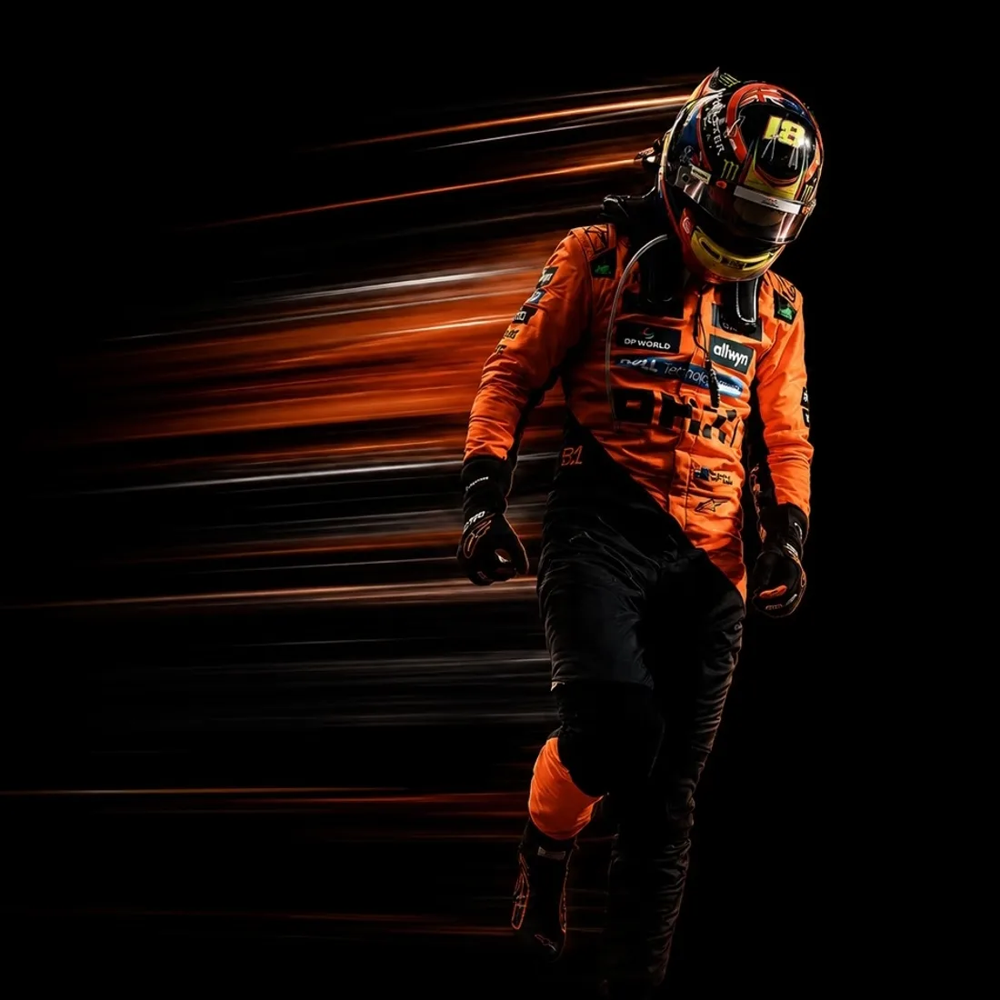

01
摄影
Photography
我喜欢摄影，因为它逼人慢下来。取景框是个很诚实的地方 —— 你怎么看世界，它就怎么还给你。多数时候我拍的都不是什么大场面， 只是一段刚好对的光。
学生 · 开发者 · 创作者

安静的人，做扎实的事。
01 档案 / PROFILE
02 关于我 / ABOUT
我生于 2006 年 1 月，摩羯座 —— 冬天里最后一段，也是最沉得住气的一段。 土象星座的耐心，加上 ISTJ 那种近乎固执的条理，构成了我做事的基本方式： 不太相信灵光一现，更相信把一件事拆成步骤，然后一格一格走完。
我是学生，也是开发者和创作者。喜欢把抽象的想法变成真的能跑起来的东西 —— 从 MATLAB 的一个仿真模型，到一个可以点击的界面。
我相信好的工程和好的设计其实是同一种手艺：克制、准确、恰到好处。 多余的东西不是风格，是噪音。
Born in January 2006 — Capricorn, the most patient stretch of winter. Add an ISTJ's stubborn tidiness, and you get the way I work: I don't trust flashes of inspiration, I trust breaking a thing into steps and finishing them one by one. I'm a student, developer and creator, and good engineering and good design are, to me, the same craft: restrained, precise, deliberate.
03 热爱 / PASSIONS
Photography
我喜欢摄影，因为它逼人慢下来。取景框是个很诚实的地方 —— 你怎么看世界，它就怎么还给你。多数时候我拍的都不是什么大场面， 只是一段刚好对的光。
Motorsport
我喜欢赛车。不只是因为快，而是那个速度里，一条弯道的走线值得被 讨论一整个下午。那是把直觉、纪律和物理规律，同时压进三秒钟的运动。

Music · 孙燕姿
我听孙燕姿。从《天黑黑》到《遇见》，她的歌里几乎没有声嘶力竭， 只有把话好好说完的克制。那正好是我喜欢的音量 —— 也是我做事的音量。
05 技能 / TOOLKIT